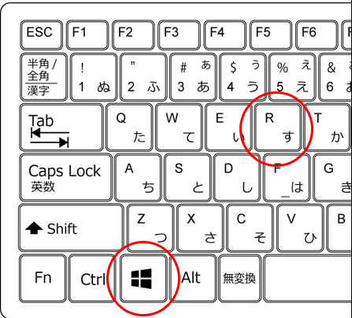
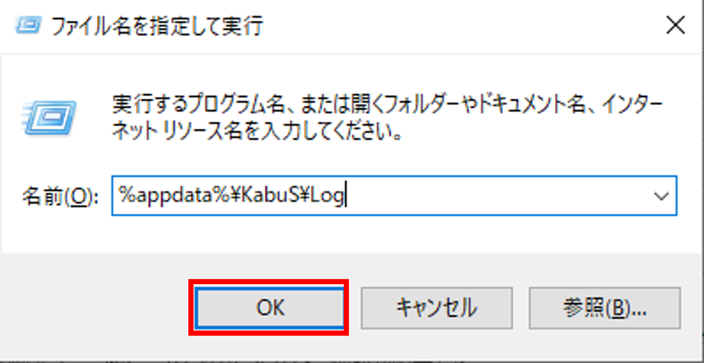

以下の手順に従って、ログの参照が可能となります。
- Windowsキー + R を押下します。

- 参照したいログのパスを入力し、「OK」をクリックします。
※以下はデバッグログを例としています。
デバッグログ：%appdata%\KabuS\Log
APIログ：%appdata%\KabuS\Log\APILog

以下の手順に従って、ログの参照が可能となります。
発注APIは5件/秒、取引余力APIや情報API、銘柄登録APIは10件/秒となります。それ以上のリクエストをしますと、エラーとなります。
kabuステーション®の利用可能時間は、6:30から翌早朝6:15までとなります（メンテナンス日を除く）。
kabuステーション®APIはkabuステーション®と同一IPからのリクエストのみを受け入れます。そのため、同一PCでご使用ください。
kabuステーション®APIを使ったリクエストは、kabuステーション®を通してリクエストしています。
kabuステーション®APIをご利用になる際は、常にkabuステーション®を起動しておく必要があります。
間引き間隔は400msとなっております。
作成したプログラムの動作確認としてご利用いただけます。